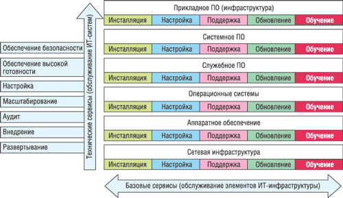
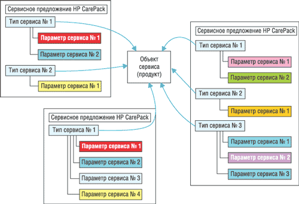

Александр Николов
anikolov@bytemag.ru
Тематика данной статьи, на первый взгляд, не совсем соответствует названию рубрики - все-таки, как ни крути, а сервисное обслуживание трудно назвать решением или тем более платформой в привычном понимании этих терминов. И все же, как станет понятно из данного материала, в современном мире ИТ-сервис уже давным-давно превратился в товар со всеми прилагающимися к этому термину атрибутами и, соответственно, со всеми вытекающими из этого определения последствиями. По сути, сегодня ИТ-сервис выступает важнейшим элементом - пожалуй, даже одним из краеугольных камней - любой мало-мальски серьезной ИТ-инфраструктуры предприятия и посему является товаром даже более ценным, чем те программные или аппаратные решения, к которым он должен был бы выступать приложением.
Вообще говоря, тематика сервисного обслуживания сама по себе, да и конкретные вопросы, связанные с особенностями тех или иных сервисных программ и услуг, - это пока terra incognita: на страницах ИТ-изданий не часто встретишь материалы, связанные со сферой ИТ-сервисов, разве что иногда мелькают статьи о достаточно новом для нас и потому модном направлении - аутсорсинге. Такое положение дел вызвано тем, что в большинстве случаев заказчики рассматривают сервис как нечто обыденное, само собой разумеющееся и не требующее сколько-нибудь значительного внимания за пределами случаев реальных сбоев и отказов оборудования и остановки важных бизнес-процессов.
Не в последнюю очередь именно поэтому и возникла идея данной статьи - на взгляд автора, совершенно необходимо поколебать устоявшееся и не совсем верное представление потребителей о том, что такое техническая поддержка, и попытаться рассказать хотя бы в общих чертах, как она устроена и как работает.
Однако необходимо отметить, что тема сервиса на самом деле не так проста, как может показаться, и с наскока ее вряд ли осилить - для того, чтобы сложилось адекватное представление о сути вопроса, достаточно ясное и глубокое понимание всех аспектов и особенностей, читателям придется потратить некоторое время на осмысление.
Размышляя над логикой изложения материала и пытаясь как-то обобщить все многообразие сервиса, найти доходчивую и ясную иерархическую структуру, автор не нашел ничего лучше, чем воспользоваться типовой схемой, описывающей жизненный цикл любого стандартного проекта, вычленив из нее в самом общем виде три наиболее важных этапа - развертывание, эксплуатацию и завершение жизненного цикла и привязав к каждому из них некоторый набор ИТ-сервисов. В самом деле, на каждом из этих этапов у заказчиков неминуемо возникает потребность в поддержке со стороны производителя аппаратного или программного обеспечения, стало быть, на каждом этапе должен существовать некий, пусть даже минимальный, набор сервисных услуг, призванных облегчить жизнь клиента.
Структура сервисных услуг
Поскольку охватить за один раз все аспекты сервисного обслуживания на каждом из трех этапов не так-то просто, постараемся вычленить внутри них некоторые основные направления. Так, на этапе инсталляции/развертывания выделено направление, связанное с непосредственной установкой и наладкой новых программных и аппаратных решений, и направление интеграции новых решений в уже существующие гетерогенные мультивендорные информационные системы. На этапе эксплуатации выделены направления, связанные с так называемым стандартным уровнем обслуживания, с расширенным уровнем обслуживания и с технической поддержкой программных и аппаратных решений сторонних производителей в рамках единой интегрированной программы сервисного обслуживания. Дабы избежать здесь путаницы, стоит отметить, что в комплект любого программного и аппаратного решения входит так называемая заводская гарантия, регламентирующая, в соответствии с условиями контракта на приобретение, сроки, объемы, состав и уровень сервисной поддержки, оказываемой потребителю изначально. Эта гарантия составляет часть комплекта поставки продукта и никоим образом не может быть вычленена, а ее стоимость входит в общую конечную стоимость оборудования или ПО. Исходя из этого, принимать ее в рассмотрение мы не станем, но для общего понимания и дабы не путать ее со стандартным уровнем обслуживания, помнить об этом нюансе все же стоит. Наконец, на этапе завершения жизненного цикла выделено направление, связанное с техническим обслуживанием программных и аппаратных решений после завершения их коммерческой жизни, т. е. в период между прекращением официальных поставок и окончательным отказом от какой-либо поддержки.
Однако существует и иная плоскость рассмотрения сервиса, обойти которую в данном случае было бы некорректно. Сервис как таковой можно разделить на две категории - некое подобие пакетированного товара, пусть даже и не выраженное в явном виде, то есть не наделенное каким-то специальным именем, и чистая услуга - сервисное решение с уникальным набором характеристик, подобранных под конкретного заказчика. Вторая категория, особенно на стадиях внедрения и завершения жизненного цикла, близка к ИТ-консалтингу, и грань, разделяющая здесь собственно сервис и консультационные услуги, очень тонка. Более того, в подавляющем большинстве случаев, когда речь идет о критичных для бизнеса системах, все возможные ИТ-сервисы, относящиеся к стадии внедрения, по умолчанию входят в комплект поставки этих продуктов. И это вполне логично - кто же рискнет покупать дисковую систему хранения уровня предприятия или Unix-сервер без серьезной поддержки со стороны производителя. В придачу можно отметить, что сервисы, связанные с интеграцией новых продуктов в гетерогенные мультивендорные информационные системы, по большей части относятся к компетенции ИТ-консалтинга и составляют часть внедренческих проектных решений. Таким образом, как минимум один этап, а именно внедрение, практически выпадает из нашего рассмотрения, поскольку консалтинг как таковой - тема отдельного разговора и выходит далеко за рамки поставленных задач. И все же мы не обойдем его стороной совсем: дело в том, что состав сервисных решений никак не зависит от рассматриваемого этапа, меняются лишь его характеристики - время реакции на проблему, сроки выполнения работ и т. д. Единожды рассмотрев концептуальную схему и получив общее представление о составе сервисных решений, читатели смогут в дальнейшем просто адаптировать ее в соответствии с текущими обстоятельствами.
Учитывая все сказанное, в дальнейшем изложении основное внимание будет уделено так называемым пакетированным сервисам, которые можно рассматривать как ядро, концептуально скрепляющее все остальные направления технической поддержки.
Читатели, не понаслышке знакомые с особенностями технической поддержки крупных вендоров, думаем, вполне согласятся с изложенными выше соображениями; тем же, кто имеет о сервисе лишь смутное представление, не выходящее за рамки компетенции собственного ИТ-отдела, полагаем, небезынтересно будет узнать, как устроен сервис у одного из крупнейших транснациональных вендоров - корпорации Hewlett-Packard (http://www.hp.com).
Сервисный портфель HP
Повествование о сервисном портфеле HP логичнее всего начать с рассмотрения его концептуальной схемы, основанной на стеке технологий (рис. 1). В ИТ-инфраструктуре любого предприятия существует некоторая технологическая иерархия, в которой каждый вышестоящий уровень опирается на более низкий. В основе ее лежит так называемая сетевая инфраструктура, причем подразумеваются как сети передачи данных, так и сети хранения; над ним располагается уровень аппаратного обеспечения - слой, потребляющий максимальное количество сервисов. Далее идет уровень операционной системы, за ним слой служебного ПО - всякого рода утилиты, средства администрирования, резервного копирования, ПО кластеризации; выше уровень системного ПО - OpenView-решения от HP, решения от Microsoft, Oracle; над ним располагается уровень технической инфраструктуры прикладного ПО, а над всем этим - уровень бизнес-логики прикладного ПО. В большинстве случаев сервисный портфель НР обеспечивает поддержку с первого по шестой уровень включительно, последний же обычно находится в зоне ответственности ИТ-команды заказчика.
|  |
| Рис. 1. Уровни ИТ-инфраструктуры и сервисы HP.
|
Первый уровень сервиса HP условно можно назвать базовым или стандартным. Он имеет отношение к обслуживанию отдельных элементов ИТ-инфраструктуры предприятия. Если взять один из уровней стека, то к нему может быть применен какой-то из базовых сервисов. Например, к аппаратному обеспечению сервера применимы следующие уровни: обучение сотрудников заказчика, инсталляция, аппаратная поддержка - устранение проблем, замена неисправных узлов и деталей и т. д., обновление, включая разработку плана и установку деталей, и настройка разными системными утилитами. То же самое приложимо к операционным системам, служебным утилитам и прочим уровням. Базовые сервисы обычно сопряжены с приобретением оборудования. На этапе внедрения они чаще всего представлены заказанной у вендора инсталляцией какого-либо сложного оборудования. На этапе эксплуатации они могут дополнять стандартную заводскую гарантию. А на этапе завершения жизненного цикла оборудования - заменять заводскую и все прочие типы гарантий.
HP CarePack
Один из важнейших моментов, о которых необходимо упомянуть, состоит в том, что в области базовых сервисов существует программа пакетированных продаж, известная на рынке под названием HP CarePack. Особо отметим, что это фактически единственная область, где такой продукт существует, - все остальные уровни сервисного обслуживания HP предусматривают индивидуальный подход к формированию требований сервисов с привлечением сервисных архитекторов. HP CarePack представляет собой пакет сервисного обслуживания, который распространяется практически на всю продукцию HP - от персональных систем до самого тяжелого корпоративного оборудования.
В рамках подхода HP CarePack выделяют следующие составные элементы (рис. 2): объект сервиса - конкретное оборудование или ПО, подлежащее сервисному обслуживанию; тип сервиса - все виды обслуживания, применимые к выбранному объекту, например, Software Updates или Hardware Maintenance; параметры сервиса - условия, характеризующие предоставление того или иного типа сервиса для конкретного объекта, например, время приема сообщений, время отклика, время гарантированного восстановления системы и т. д. Очевидно, что такой принцип построения сервиса может порождать на выходе всевозможные комбинации, с основными из которых можно ознакомиться на сайте компании HP. Однако принципиальная часть - типы сервиса - остается неизменной и фактически стандартизованной для любых компаний в любых частях света, так что единственным серьезным отличием, позволяющим в числе прочего как-то выделить поставщиков сервиса, остаются качественные характеристики самих работ по поддержке и их соответствие заявленным параметрам.
|  |
| Рис. 2. Принцип построения и элементы пакетов HP CarePack.
|
Работая с НР CarePack, заказчик приобретает законченный пакет, включающий в себя одно или несколько сервисных предложений или типов сервиса с некими параметрами, присущими именно этому пакету. Разумеется, в силу естественных ограничений число готовых пакетов НР CarePack не может быть сколь угодно большим - они охватывают лишь основные, наиболее востребованные комбинации типов сервиса и параметров. Однако заказчики могут заключить с HP сервисный контракт, построенный на тех же принципах, что и пакеты НР CarePack, но с более гибкими возможностями по составу и параметрам сервиса.
Помимо сервисного контракта и опции, приобретаемой вместе с каким-либо продуктом для расширения его заводской гарантии, НР CarePack существует в виде отдельного независимого продукта, приобретение которого никак не связано с покупкой какого-либо аппаратного или программного обеспечения. Такая возможность предусмотрена для случаев, когда сервис требуется для систем, уже развернутых на территории заказчика. Клиенты приобретают некоторый сервисный пакет с интересующими их типами сервиса и параметрами, регистрируют его и получают набор сервисных услуг, привязанных к своему оборудованию.
На сегодняшний день CarePack - это наиболее известный и популярный сервисный продукт HP, однако его распространение ограничено в основном системами нижнего и среднего уровня, поскольку в случае тяжелого оборудования все сервисные услуги обычно приобретаются в момент его покупки в виде сервисного контракта. Нелишне будет отметить, что пакеты НР CarePack могут быть распространены и на небольшой и весьма ограниченный круг продуктов (в основном ПО) сторонних производителей - партнеров HP.
Расширенные сервисы
Помимо пакетов НР CarePack, существуют так называемые расширенные сервисы или сервисные решения, имеющие отношение к обслуживанию ИТ-систем в целом. В отличие от "горизонтальных" базовых сервисов, распространяемых на каждый уровень ИТ-инфраструктуры, они имеют "вертикальную" ориентацию и могут охватывать комбинацию уровней инфраструктуры. Следуя жизненному циклу, среди них можно выделить следующие виды: развертывание - монтаж и проверка работоспособности оборудования и ОС, внедрение - дополнительная установка служебного и системного ПО, а также базовой части прикладного ПО, аудит - оценка безопасности системы, ее надежности, производительности и т. д., масштабирование - расширение возможностей системы в соответствии с изменившимися требованиями, настройка - согласование всех элементов системы для повышения эффективности их работы, обеспечение высокой готовности системы и ее безопасности, и наконец, как высшая ступень, включающая все предыдущие сразу, - аутсорсинг. Таким образом, очевидно, что расширенный уровень обслуживания доступен заказчикам от ввода системы в эксплуатацию до полного завершения ее работы.
Поддержка критически важных систем
Существует еще и третий уровень - уровень поддержки критически важных систем (Critical Services), который имеет отношение и к базовым сервисам, и к сервисным решениям одновременно. Фактически это сервис, распространяемый на критичные для бизнеса компании компоненты ИТ-инфраструктуры и отличающийся сверхвысоким уровнем обслуживания, а также более тесным двусторонним взаимодействием между заказчиком и вендором в области аудита и настройки ИТ-инфраструктуры. Сервисы данного уровня уместны, когда заказчик стремится привести свою информационную систему в состояние максимальной доступности и производительности. В этом ему может помочь ряд аудитов, основанных на различных методологиях, в первую очередь ITSM, которые проводятся с определенной периодичностью и позволяют определить, насколько ИТ-инфраструктура компании соответствует требованиям бизнеса, выявить ее узкие места и зоны риска. На основании полученных результатов может быть разработан план модернизации и дальнейшего развития всей инфраструктуры, и по сути дела компания HP выступает в этом случае партнером заказчика. Немаловажно отметить, что все эти процессы опираются на техническую поддержку ПО и аппаратуры, для реализации которой прописаны стандартизованные процедуры восстановления программной и аппаратной части, операции их мониторинга, позволяющие оперативно реагировать на угрозы, не дожидаясь сбоев или отказов оборудования.
Таким образом, общая идея состоит в совместном развитии ИТ-инфраструктуры, однако все заказчики разные, и кому-то в большей степени требуется методологическая поддержка, а кому-то - базовые сервисы. Уровень поддержки критически важных систем позволяет избежать дилемм в выборе необходимого, позволяя в обоих случаях опереться на отработанные сервисы HP.
Иерархия сервисов
Итак, в сервисном портфеле Hewlett-Packard можно выделить иерархическую структуру, состоящую из пяти уровней:
- заводская гарантия, называемая иногда стандартной гарантией, которая покрывает основные потребности в обслуживании оборудования;
- стандартный уровень дополнительного сервисного обслуживания - базовые сервисы по сопровождению систем;
- расширенный уровень дополнительного сервисного обслуживания - проектно-ориентированные сервисные решения для поддержания работоспособности ИТ-инфраструктуры предприятия;
- уровень поддержки критически важных систем - комбинация базовых сервисов и решений, направленных на обеспечение надежной работы критически важных элементов ИТ-инфраструктуры;
- комплексный ИТ-аутсорсинг, инкорпорирующий в себя все нижележащие уровни и предполагающий полную ответственность за работоспособность ИТ-инфраструктуры предприятия.
При этом сервисный портфель построен таким образом, что обеспечивает единый механизм приобретения любых сервисов.
Что касается сервисного обслуживания продуктов сторонних производителей, особенно на этапе эксплуатации решений при построении интегрированной целостной программы сервиса для гетерогенных мультивендорных информационных систем, эта тема заслуживает отдельного серьезного разговора и в большей степени относится к компетенции консалтингового подразделения HP. Не углубляясь в суть вопроса, все же отметим, что ценность подобных решений в первую очередь заключается в организации единой точки входа для оказания равнозначного по уровню и масштабам сервиса в расчете на все элементы мультивендорной гетерогенной системы. Комплексная поддержка в данном случае выражается в предоставлении заказчику гарантий качества со стороны его сервис-партнера, закреплении ответственности сторон, выравнивании уровня сервиса по всем элементам информационной системы. И когда речь идет о такой комплексной поддержке, фокус всегда смещается с конкретных сервисов на всеобъемлющие проектные решения.
Цены
И последний момент, на котором, наверное, стоит заострить внимание, - примерный уровень цен на сервисное обслуживание от HP. Как читатели, вероятно, уже поняли, говорить о конкретном уровне цен имеет смысл только в одном случае - НР CarePack, ибо обсуждение проектных смет вряд ли может что-то дать ввиду уникальности условий каждого отдельного сервисного контракта. Однако и с CarePack не все так просто - ценообразование на сервисные пакеты не всегда прозрачно, поскольку зависит от множества взаимосвязанных вещей, иногда даже второстепенных факторов, и на первый взгляд может показаться алогичным. Например, для некоего оборудования существует пакет CarePack с трехлетней гарантией и обслуживанием по схеме 24х7, который заказчик может купить по определенной цене. Вместе с тем на то же самое оборудование существует стандартная заводская гарантия длительностью один год с возможностью ее дальнейшей пролонгации и расширения (с использованием пакетов CarePack) до тех же трех лет и схемы обслуживания 24х7. Казалось бы, цена приобретения дополнительного сервиса в обоих случаях должна совпадать. Однако это не так - если клиент покупает дополнительный сервис сразу, как в первом случае, внутренние издержки HP на организацию склада и хранение необходимых запасных частей будут иметь один размер; если же клиент покупает дополнительный сервис частями, как во втором случае, размер издержек будет совершенно иным, что, несомненно, повлечет за собой изменение стоимости сервиса. Простой и наглядный пример, однако "снаружи", при изучении каталога с ценами все это не просматривается, и у потребителей зачастую возникает недоумение. Дабы не попасть впросак, можно посоветовать им прежде всего повнимательнее приглядеться к собственному оборудованию и, взвесив все за и против, хорошенько обдумать стратегию расширения своих сервисных контрактов, направив основные усилия на ее оптимизацию.
* * *
В завершение отметим, что эта статья открывает небольшой тематический цикл, посвященный проблемам сервисного обслуживания, и в ближайших номерах мы продолжим подробное исследование вопросов, связанных с программами технического обслуживания крупнейших компаний, представленных на российском рынке.